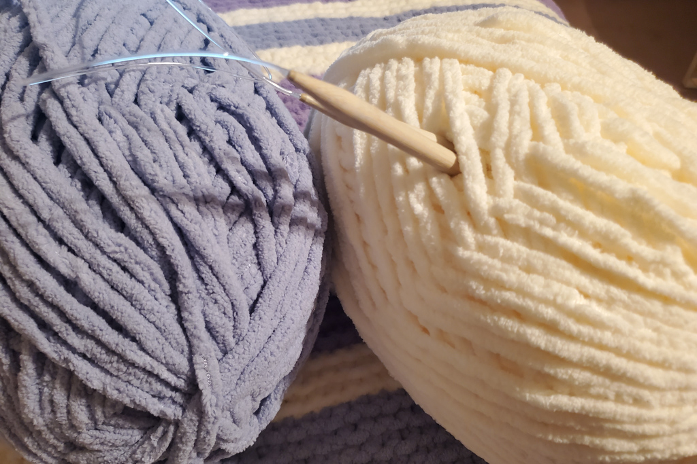
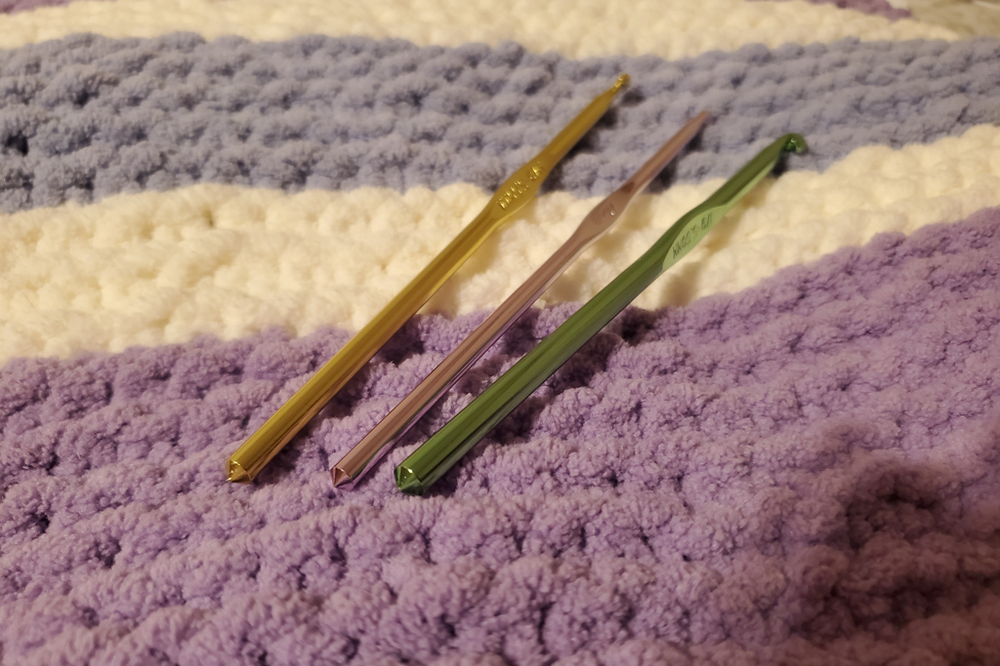
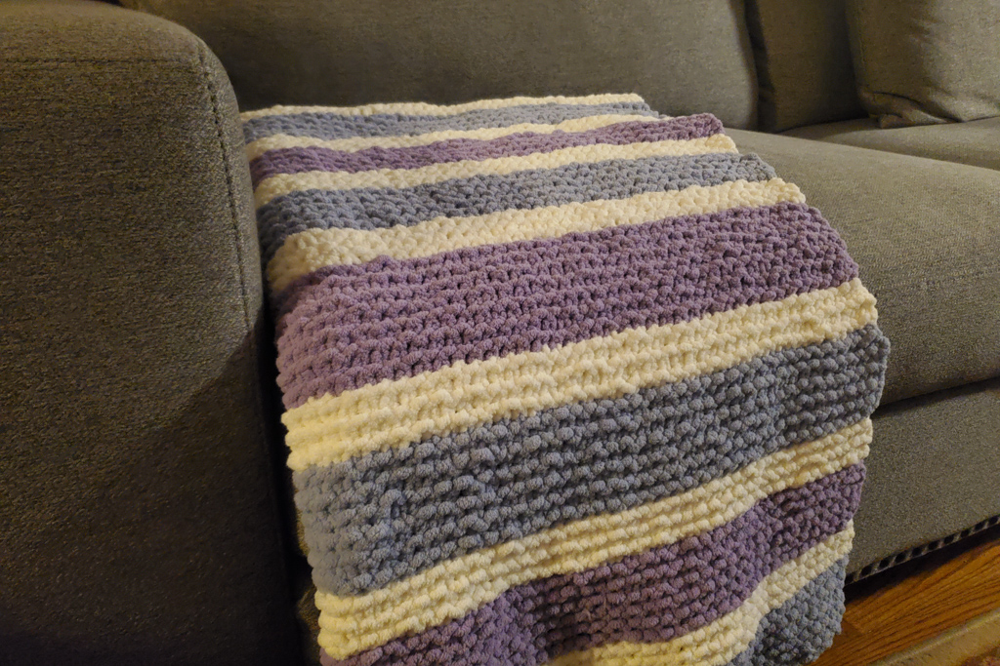

DIY Knitted Blanket
Feb 7 - Written by Bonnie
This winter I took on one of the largest craft projects I’ve done before, I made a blanket!! On a whim during a trip to Michaels, I found myself in the yarn section and discovered some of the softest blanket yarn ever. I couldn’t help myself so I bought a bunch of blanket yarn and a knitting needle and decided I would figure it out from there.
I’ve done some small knitting projects before but this was a whole new territory. Despite being familiar with some normal scarf knitting processes, this was the first time I decided to undergo such a large knitting project but that soft yarn was just so irresistible. Also during these winter days, knitting and crocheting can be some of the most soothing activities to do indoors to relax with.
The yarn that I used in my blanket is called Bernat Blanket Yarn, keep in mind Bernat also makes Extra thick blanket yarn that is also perfect for hand knitting chunky blankets. The colors that I had picked out are Smokey Blue, Vintage White, and Baby Lilac; but of course you can pick whichever colors you prefer to make your blanket in. Having never learned the measurements such as gauge, for knitting, I definitely had to look up a video to figure out the length and stitching pattern that I would be using.
As per the tutorial, it does specify that you would need around 5 balls of yarn, but I actually ended up only using around 3 balls of yarn to complete the suggested width and height of the blanket from the pattern. However, do keep in mind that this would depend on how tight or loose you knit each stitch that could also change how wide your blanket is overall. Another thing to keep in mind is that the amount of loose yarn did you leave out when switching yarn colors can also impact how many balls of yarn you use!
Some other tips to keep in mind is that a blanket typically requires a round needle instead of your typical knitting needles. This is because the blanket width is so long that all the stitches that you would need wouldn’t be able to fit into the needle itself. A round knitting needle provides a plastic connector that ties the two needles together and lets you cast on more stitches with the extra added length. Do be warned though that the blanket does start to get heavy on the needle as you continue knitting!
The entire process was pretty easy to learn from the tutorial since I was only doing a garter stitch that used one type of knot throughout the process, so once you cast on however many stitches indicated in the pattern you’re all set to go! At the end I did have to take a little bit of time to weave in all the loose ends into some of the knitted rows and I used crochet hooks for this to make it a little easier but your can also use fabric needles if you have them! Overall, my entire blanket took me around 1 month to complete with a lot of breaks in between but it was definitely the perfect activity to do while I was watching tv or just sitting and enjoying a nice cup of tea.
